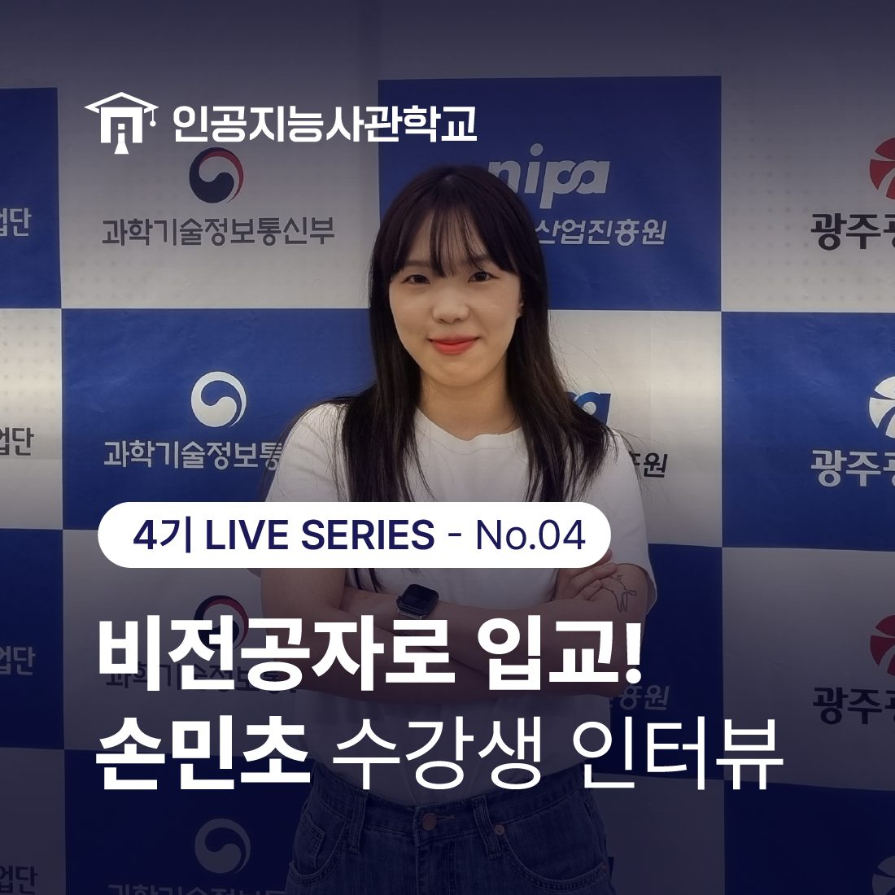
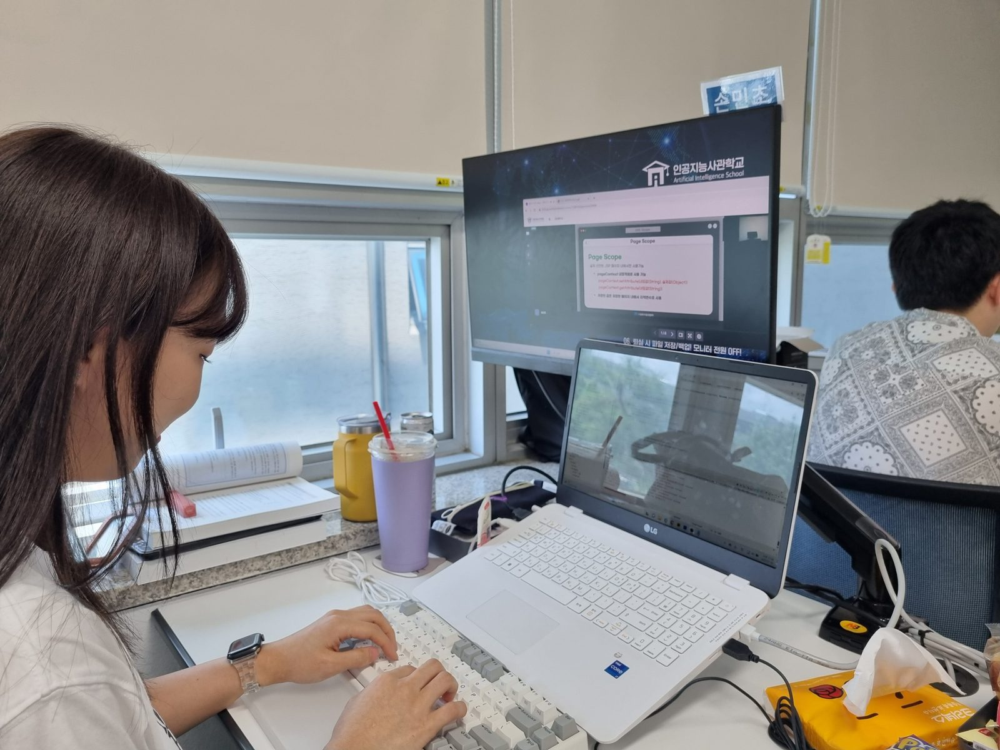
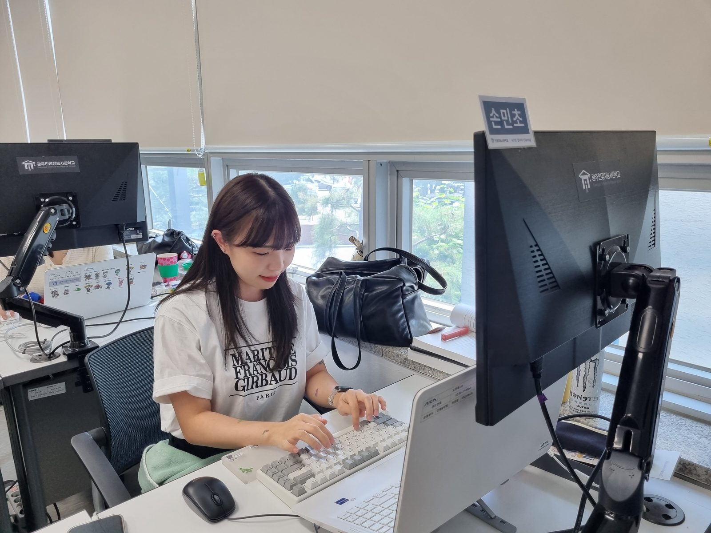
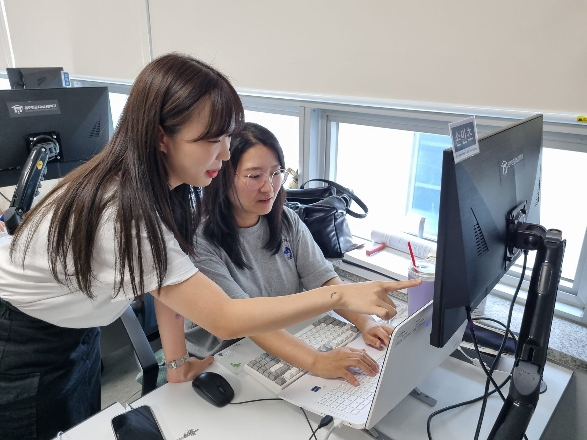
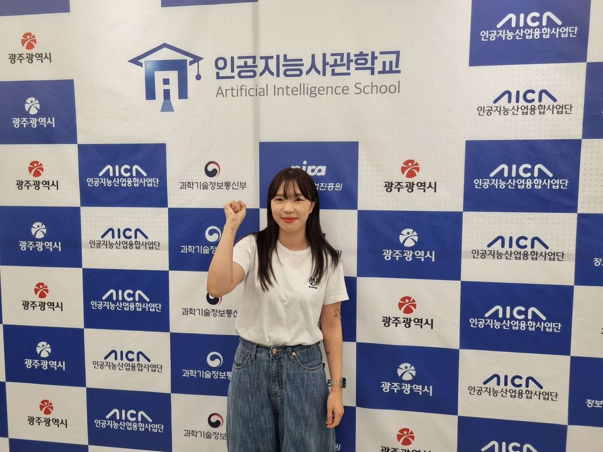

안녕하세요! 인공지능사관학교입니다. 😆
오늘은 비전공자로 입교한
손민초 수강생의 인터뷰를 준비해보았는데요.
아래에서 바로 같이 만나볼까요? ☺️

🤖 안녕하세요! 간단하게 자기소개 부탁드릴게요.
안녕하세요. 2023년 인공지능사관학교 4기 교육생 29살 손민초입니다. 저는 경제학과(부)를 졸업하여 전혀 관련 없는 비전공자였습니다.
본 과정을 신청할 때, '항상 열린 자세로 배움에 임하자'는 마음 가짐으로 시작하게 되었는데요.
비전공자이면서 늦게 시작한 만큼 최대한 배움에 적극적이고 지식을 내 것으로 만드는 노력을 해야 한다고 생각하기 때문입니다.
🤖 인공지능사관학교 과정을 수강하게 된 계기는 어떻게 될까요?
경제학과 졸업 후 진로를 고민하던 시기에 웹퍼블리셔 과정을 국비지원교육으로 수강한 경험이 있습니다.
그 때 프론트엔드로 처음 코딩을 접하게 되었고, 개발에 대해 더 깊게 배우고 싶어서 백엔드를 공부하고 있던 중에 인공지능사관학교를 알게 되어 지원하게 되었습니다.
제가 경험했던 과정에 비해 규모가 커서 믿고 지원할 수 있었고, 체계적으로 짜여진 커리큘럼과 수업 방식이 실력 향상에 큰 도움이 될 것 같았습니다.
또한 프리트레이닝 시스템이 잘 마련되어 있어서 입교 전에 교육을 충분히 받아 비전공자들에게 아주 좋은 기회라고 생각해 꼭 입교하고 싶었습니다.

🤖 지금까지 과정에서 어떤 것들을 배우셨나요?
지금은 입교한지 8주차 정도 되었는데, 자바와 파이썬, 데이터베이스와 서버 등 다양한 프로그래밍 언어와 툴 등을 배웠습니다.
선생님들께서는 이해하기 쉽게 이론부터 기초 지식을 탄탄하게 쌓아주시고, 실습 위주의 수업이라 비전공자인 교육생들도 기술을 습득하기에 어려움이 없었습니다.
🤖 비전공자로 힘들었던 점은 없었나요?
인공지능사관학교 교육생들 중에는 비전공자들도 꽤 있지만 전공자나 실력자 교육생들도 많이 있습니다.
처음엔 제가 많이 부족한 것 같은 마음에 걱정도 많이 되고 위축도 조금 되었지만, 열린 자세로 교육생들끼리 물어보고 알려주며 서로에게 많이 배우고 있습니다.
교육중은 물론 수료후에도 프로젝트를 하며 팀원들끼리 협업을 많이 해야 하는 특성상, 이러한 인사교의 열린 소통환경은 성장하기에 좋은 바탕이 되어준다고 생각합니다.
처음 공부를 시작할 때엔 전공 지식이 코딩과 전혀 관련 없을 것이라고 생각했습니다. 하지만 데이터베이스 관련 수업을 들으며 데이터를 분석, 처리하는 과정에서 도움이 됐고, 추후에 여러 프로젝트를 진행하며 경제학적 지식과 관점을 기반으로 효율적의고 창의적인 시스템을 개발 할 수 있을 것이라 생각합니다.

🤖 과정중 가장 좋았던 부분은 무엇인지도 말씀해주세요!
좋았던 점으로는 먼저, 전문분야 강사님들이 언어별, 과목별로 담당 해주셔서 높은 퀄리티의 수업을 들을 수 있어 만족이 컸습니다.
또한 정규 수업 시간 후 선생님들께서 해주시는 보충 수업은 저 같은 비전공자들에겐 큰 도움이 되었습니다.
자율로 참여할 수 있어서 다른 분들의 진도에 영향을 끼치지 않고 이해가 부족한 교육생들은 더 심도있게 배울 수 있어서 좋았습니다.
🤖 가장 기억에 남는 순간은 언제인가요?
최근에 과정 중 첫 프로젝트를 시작하게 되었습니다.
프로젝트가 처음이라 기대 반 걱정 반으로 시작했지만, 팀원들과 협업하여 결과물을 만들어 내면서 책임감과 소속감이 생기는 과정에 즐거움을 느끼고 있습니다.
인공지능사관학교를 다니며 많은 선생님을 뵙고 교육생들과 어울리면서, 의견을 나누고 소통하며 문제를 해결하는 것도 개발의 과정이라는 것을 느꼈습니다.
자신의 스킬만을 쌓는 것이 능력의 전부가 아니라 아이디어를 창출하고 다른 의견도 수용하며 협업하는 자세가 개발자의 진정한 자세라고 생각하게 되는 경험이었습니다.

🤖 인공지능사관학교만의 장점이 있다면 어떤 건가요?
교육생이 많아서 의견 공유의 장이 넓고, 열정 가득한 담당 선생님들의 애정 어린 조언과 도움이 뼈와 살이 되는 곳입니다.
취업 특강이나 초청 강연, 현직개발자 멘토링 등의 흔하지 않은 기회를 적극적이고 다양하게 지원해 주셔서 쉽게 접하지 못할 경험들을 하고 있습니다.
또한 커리큘럼과 교육 플랫폼이 체계적으로 잡혀있어서 교육생들은 전폭적인 지원 아래 전적으로 열심히만 하면 되는 곳입니다.
🤖 끝으로 향후 계획이 있다면 말씀해주세요!
아직 배울 과정들이 많이 남아있어서 새로운 지식과 언어를 배울 생각에 설레면서도 긴장도 됩니다.
남은 교육 기간 동안 최대한 많이 배우고 최선을 다해 노력하여, 최종 프로젝트와 수료까지 멋진 마무리 하고 싶습니다.
그리고 6개월간의 경험을 토대로 쌓은 실력을 수료 후 빠른 시일내 취업하여 실무에서 활약하는 인재가 되고 싶습니다.
